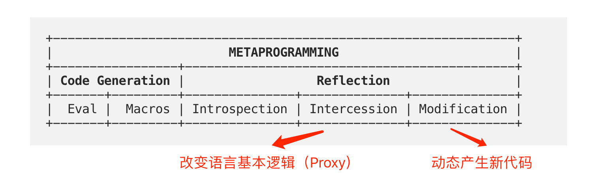
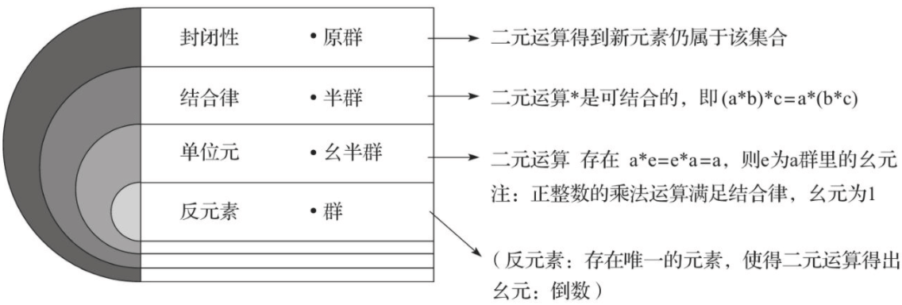

《前端函数式演进》读书笔记
近几年不知道是刮什么风，“函数式”这个概念在前端开发领域变得愈发火爆，仿佛你不懂一点函数式、Monad 相关的知识，就已经与这个圈子脱节。而对于一个短时间内不准备看 SCIP 的人来说，希望能够通过这本“前东家”同事的著作，让自己入个 FP 的门。
第 1 章 - 编程范式和前端体现
- Page 9常见编程范式：
- 命令式（Imperative Programming）：顺序编程外加一些控制流程语句；程序调用的对象包括含有一系列运算步骤的程序、例程、子程序、方法、函数等；
- 面向对象（OOP）：将程序视为一组对象的集合，每个对象都可以接收并处理其他对象发来的消息；
- 元编程（Meta Programming）：指编写的某类计算机程序，这类程序编写或者操纵其它程序（或者自身）作为它们的资料，或者在运行时完成部分本应在编译时完成的工作（通过“反射”，动态地影响其他部分代码的执行行为）。自省/反射：前者仅指程序在运行时对自身信息（元数据）的检测；后者不仅包括要能在运行时对程序自身信息进行检测，还要求程序能进一步根据这些信息改变程序状态或结构；
- 以 JavaScript 为例：
// without reflection.
class Foo { bar() { console.log('Foo.bar called!'); }}
const foo = new Foo();
foo.bar();
// with reflection.
const foo = Reflect.construct(Foo, []);
const bar = Reflect.get(foo, 'bar');
Reflect.apply(bar, foo, []);
// with "eval".
eval('new Foo().bar()');
- JavaScript 元编程分类：

- 声明式编程：编码时关注的是要做什么而不是怎么做。常见的声明式语言和表现有：逻辑式编程语言、函数式编程语言，及一些相关形式，如“正则”等。代码层面使用可枚举集合的整体指令，如
map和for...in代替传统 while 或 for 循环的步进操作。大部分 DSL（SQL、CSS 等）也属于声明式编程语言的范畴；- 逻辑式编程：是一种面向演绎推理的逻辑型编程语言，其中“约束满足问题”是变量集合和约束条件的集合。我们给出公理（事实）、已知条件（规则）、问题（查询），然后等待编译器给出结果；
- 函数式编程：基于 lambda 演算的编程语言模式。函数式编程将计算机运算视为数学上的函数计算，并且会避免使用程序状态以及易变对象。
第 2 章 - 前端函数式基础概念
- Page 34JavaScript 中的函数式：
- 思维目标：程序执行时，应该把程序对结果以外的数据的影响控制到最小；
- 开发者偏向使用“函数”来管理有明确输入输出的过程；
- 语言相关概念：
- 闭包：指一个特殊的函数或方法，内部绑定了函数所引用到的所有变量。这个函数或方法把它所引用的所有内容都放在一个上下文中闭合包裹起来；
- 高阶函数：由于在 JavaScript 中，函数为一等公民，即函数可以被用在其他基础类型出现的地方，函数也可以生成函数。而一个函数若接收另一个函数作为参数，或返回一个新的函数，则可称其为“高阶函数”；
- Lambda 表达式：相较于普通的函数更加纯粹，没有原型链，不会捕捉 arguments，且真正匿名；
- Array 数组集合：提供诸如 map / filter / reduce / some / find 等组合子方法，这类方法更关注结果而非过程；
- 基于高阶函数的编码优化：
- 惰性求值（基于 thunk）：
// 'hypot' is a binary function.
const hypot = (x, y) => Math.sqrt(x * x + y * y);
// 'thunk' is a function that takes no arguments and, when invoked, performs a potentially expensive
// operation (computing a square root, in this example) and/or causes some side-effect to occur.
const thunk = () => hypot(3, 4);
// the thunk can then be passed around without being evaluated...
doSomethingWithThunk(thunk);
// ...or evaluated.
thunk(); // === 5
- 函数组合与无参数风格：将嵌套形式的函数相互调用整理为组合形式（如 Lodash4 中的
_.flow）； - 珂里化与部分施用函数、偏函数：将函数的部分参数固定后，产生新函数的过程。柯里化：是把接受多个参数的函数变换成接受一个单一参数（最初函数的第一个参数）的函数，并且返回接受余下的参数而且返回结果的新函数的技术；
- 基于工具和标准的再加工：
- 不可变数据结构：包含了两个特性 - 不可变性与持久性。前者指数据结构一旦创建便无法修改；后者指当尝试改变不可变数据时，总会返回一个建立在旧数据基础上的新数据结构；
- 尾调用优化与 CPS：可以使用 Continuation 编程风格将程序写法变为返回新的递归方法，函数调用就可以等价替换为返回的结果。此时若运行环境支持优化，则可立即释放被替换的函数负载（*Continuations are generally needed when a function cannot be written as tail-recursive.*）；
- 运算符重载：可以通过对语言代码的重新解析来实现，比如 Babel 和 TS 对 “?.” 运算符的支持。
- Page 52函数式的抽象单元：
- 副作用：指某个过程、函数或方法执行后，不只是对传入值操作产生传出值，还对这两个值以外的部分产生了影响。函数式编程和命令式编程的一个区别在于是否偏向通过副作用达到目标；
- 纯函数和引用透明：前者指函数相同的入参能够输出相同的结果；后者指在前者的情况下，环境中对该纯函数的引用，在将其直接替换为函数执行结果时，不会改变整个环境的语义。
第 3 章 - 函数式思维和前端特征
- Page 70函数式一般会基于要发生的“过程”，偏向于把状态处理集中在过程的一端，尽量理想化地将其处理成过程的输入参数，将副作用集中在过程的另一端作为输出结果。函数式语言的设计出发点偏向于研究怎么把“过程”进行组合、拼装和复用，这个过程最好没有外部状态参与。
- Page 77两种编程时对过程进行高度抽象的方式：
- 反复对过程进行抽象；
- 对信息流过程处理方法的归纳。
第 4 章 - Monadic 编程和它的范畴理论
- Page 119Monadic：
- 是一种以组合模型和流式模型为主的编程模型，Monadic 是先构建一个简单的结构体（函子，Functor），再围绕这个结构体把要考虑的复杂因素逐渐添加进去，最终根据 Monadic 适用的场景归纳出特定的编码工具和编码方式；
- 函子 ->（根据需求扩展）-> 单子 -> 容器类型与容器间关系；
- 函子 Functor 类型支持两个关键属性：
- value 属性：保存这个结构的值；
- map 方法：接收一个函数，在调用该方法时，使用该函数处理 value 的映射。
function Just(value) {
this.value = value;
}
Just.of = function(value) {
return new Just(value);
}
Just.prototype.map = function(f) {
return Just.of(f(this.value))
}
const numA = 21;
const addThree = x => x + 3;
const nJustA = Just.of(numA);
const nJustB = nJustA.map(addThree);
- 应用函子：即包裹函数作为 value 的函子；
Just.prototype.ap = function(cjust) {
return cjust.map(this.value)
}
const justAddThree = Just.of(addThree);
justAddThree.ap(nJustA); // 结果仍然得到 Just 对象；
- 黑盒化：将过程内容收口，输入置于一端，结果和影响置于另一端（包括产生的异常结果）。具有特定容错分支的 Functor 实例被称之为 Maybe（单子，Monad）。
- 幺半群：“群”是集合的一种，在这个集合中需要有满足一定条件的二元运算。群中的二元运算需要满足 4 条公理：封闭性、结合律、单位元/幺元和逆元/反元素。满足部分公理的对象，可以成为原群、半群和幺半群。
- 封闭性：要求集合内需要有一种二元运算，并满足集合领域封闭，如：自然数乘以自然数得到的自然数即满足原群的的要求；
- 结合律：即二元运算是可结合的；
- 单位元：存在二元运算的单位元，和集合领域内元素 A 做二元运算仍会得到 A；
- 反元素：存在唯一元素，使得二元运算可以得出单位元（1）。比如自然数集合下已无法满足该要求；但正有理数层面的乘法则可以。

- 单子：自函子范畴上的幺半群。
- 自函子：映射到自身范畴的函子（经过 map 操作后仍属于函子范畴）；
- 幺半群：满足封闭性、支持结合律，且存在单位元。
第 5 章 - 函数式工具形态演进
- Page 161Async/Await 函数使得函数式的调用过程得以简化，其思想契合函数式，非常适合时序不受外部影响，且对外部没有显著副作用的过程。
（其他章节略）
评论 | Comments